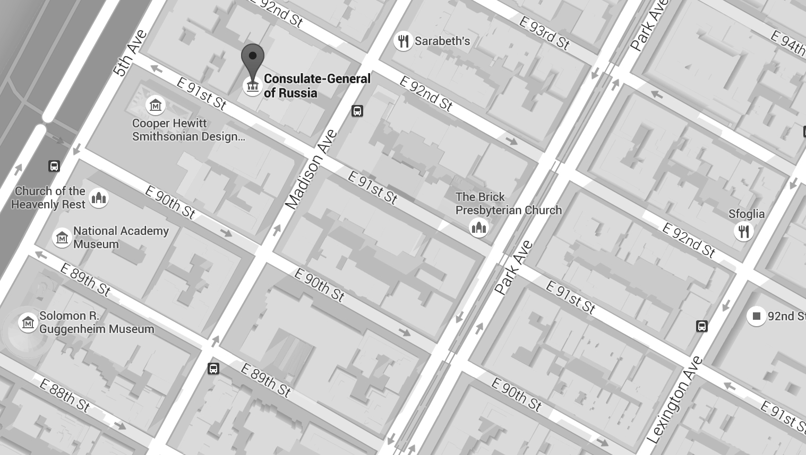

Приглашаем вас на дискуссию о будущем русско-американской молодежи в США.
На Форуме выступят представители посольства РФ в США, Ген. консульства, МИД ДРС, Россотрудничества, Московского правительства, Росмолодёжи, Торгпредства, русско-американской молодежи, дворянского собрания, организаций российских соотечественников США, КСОРС.
Когда: 4 декабря 2015 года
Место проведения: The Princeton Club of New York 15 West 43rd Street, New York, NY 10036
| 15.30-16.00 | Регистрация участников |
| Открытие | Игорь Леонидович ГолубовскийГенеральный консул РФ в Нью-Йорке |
| 16.00–16.45 | ЧАСТЬ ПЕРВАЯ: СамоидентификацияУкрепление связей с исторической Родиной, сохранение своих корней и русского языка. Представители НКО, дворянского собрания, русской иммиграции первой половины прошлого века, бизнесмены поделятся своим опытом. |
| Вступительное слово | Наталия Георгиевна СабельникПредседатель Координационного совета организаций российских соотечественников США |
| Модератор | Елена БрэнсонПрезидент Русского центра в Нью-Йорке |
| Спикеры | Татьяна Николаевна БобринскаяЧлен Русского дворянского собрания и Мальтийского ордена (ордена православных рыцарей госпитальеров св. Иоанна Иерусалимского) Кирилл Ерастович ГиацинтовПрезидент Русского Дворянского собрания в Америке Владимир Кириллович ГолицынВице-президент Русского Дворянского собрания в Нью-Йорке Андрей Соммерпротоиерей синодального Знаменского собора в Нью-Йорке |
| 16.45-17.00 | Концерт русского танцевального ансамбля, выставка, кофе |
| 17.00–18.00 | ЧАСТЬ ВТОРАЯ: ПреемственностьФормы и методы консолидации объединений русско-американской молодежи в США, молодежные проекты сотрудничества России и США |
| Вступительное слово | Владимир Владимирович ЛебедевДиректор Московского Дома соотечественника |
| Модератор | Игорь КочанПрезидент Общества русской молодежи Америки |
| Спикеры | Николай ЗайцевВетеран ВОВ, журналист Владимир Борисович ГончаренкоПредставитель Департамента по работе с соотечественниками МИД РФ Денис Геннадьевич ДьячковСоветник посольства РФ в США Эдвард ЛозанскийПрезидент Американского университета в Москве Сергей МарковЧлен Общественной палаты РФ Николай ВасильевПрезидент RASA USA Галина УоллЗам. руководителя Русского центра в Нью-Йорке |
| 18:00 | Заключительное слово |
| *В программе возможны изменения |
YFNY - это интересное и важное событие
Регистрация участников является обязательным условием. Все поля регистрационной формы обязательны к заполнению.